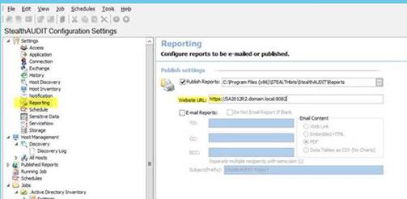
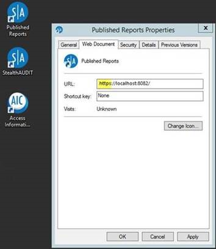
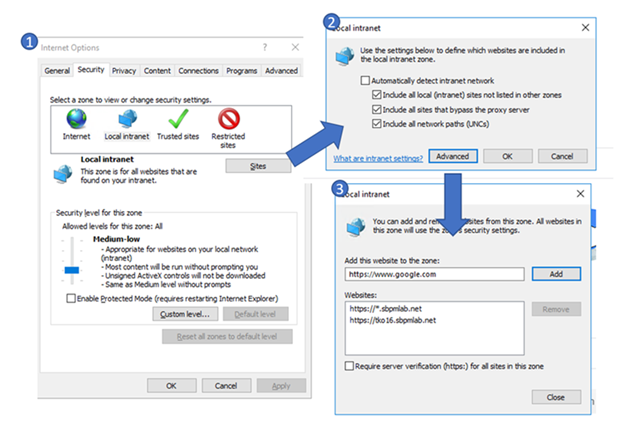
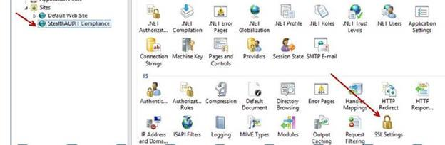
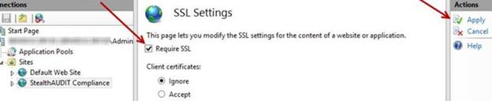
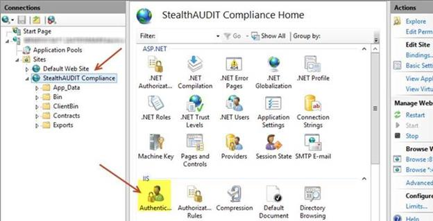
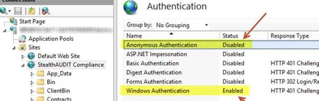
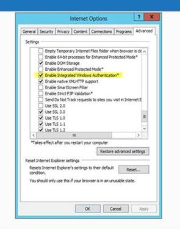

Summary: You have a need to update your STEALTHbits web reports and Access Information Console (AIC) to utilize SSL to secure the connections to those websites using HTTPS, while at the same time enabling single sign-on (SSO) and being able to access the AIC from the web reports console.
Hotfixes: NA
Issue: After a fresh install or an upgrade, the default settings for web reports utilizes HTTP on port 8082.
Extra steps are required to secure the StealthAUDIT reporting website and the AIC with SSL. By default, AIC uses ports 81 for HTTP and 481 for HTTPS, which you will need to configure with Windows Server’s built in IIS, by following the instructions detailed below.
Instructions: After a fresh install or upgrade, the first step in securing your web reports and AIC website is to make sure you have a certificate that you can use. Typically, companies request a certificate through their certificate authority (CA) and import it into the certificate store on the StealthAUDIT console server.
Start with Web Reports
To bind the certificate to the web console (port 8082) run these commands as a System Administrator, in a Windows Powershell:
Step1: netsh http show sslcert
If this command does not show a certificate bound to port 8082, proceed to the next step. Otherwise, you might need to remove the current cert with the command:
netsh http delete sslcert ipport=0.0.0.0:8082
Alternatively, you can choose an unused port and continue
Step 2: dir cert:\localmachine\my
This command outputs the “thumbprint value” for the certificate, which is needed to run the script in the next step
Step 3: $guid = "bdd5710f-7cbe-4f85-b8c1-da4bddf485a8" # This will be the same for all installations because it is a GUID from the built-in webserver application
$certHash = "INSERT THUMBNAIL VALUE FROM STEP 2 BETWEEN QUOTES"
$ip = "0.0.0.0" # this means all IP addresses
$port = "8082" # the default HTTPS port
"http add sslcert ipport=$($ip):$port certhash=$certHash appid={$guid}" | netsh
This example script binds the certificate to port 8082, the default setting.
* Remember to change the $certHash value from step 2, prior to running the script.
Step 4: A successful binding displays the message “SSL Certificate successfully added” shown below:

* The $guid is subject to change. As a result, this KB might be updated as the product is updated.
Once the port is bound, the next step is to configure the WebServer.exe.config file. To do this:
Step 1: In File Explorer, navigate to the directory %sainstalldir%\web\ and open the file, Webserver.exe.config (Your account needs read/write privileges to modify this file)
Step 2: Edit the Binding URL setting by changing:
http://+:8082"/> and changing the value to "https://+:8082"/>”
Step 3: Edit the WindowsAuthentication setting by changing:
and changing the value to “True”
Step 4: Edit the AdditionalContentTabs by changing:
and changing the value to “Access, https://+:481/v2/login?embed”
Step 5: Save the file and continue
Next, you need to update the URL in the Reports section of the Global Settings within the SA console shown below:

To change these settings:
- Open StealthAUDIT and navigate to the Reporting node, found under Settings
- Modify the Website URL from “http” to “https”
- Save the setting
- Navigate to the desktop shortcut “Published Reports”
- Edit the properties by right-clicking and selecting “Properties”
- Change the URL from “http” to “https”
- Click “Apply” to save the setting

- Launch the ‘Services’ app by clicking the Start button and searching for ‘Services’
- Right Click the item “StealthAUDIT Web Server” and select Restart
- Confirm that you can access the web reports by opening the Published Reports shortcut
Troubleshooting: If your organization does not have a process for certificate requests, and the desire is to use a self-signed certificate, you can use the ‘New-SelfSignedCertificate’ commandlet, in the Administrator PowerShell version 3.0+ to generate and import the certificate by:
Step 1: Running the command and replacing your DnsName with the appropriate machine and domain
New-SelfSignedCertificate -DnsName machinename.domain.com -CertStoreLocation Cert:\LocalMachine\My
Step 2: The output provides a Thumbprint Value, that is the certificate Hash value to be used when binding to the port. The port can be the same as in HTTP (8082). Use this Hash value for Step 2 of the Enable SSL for the Web Console instructions.
Step 3: Open Microsoft Management Console (mmc.exe) to create and import the self-signed certificate
Step 4: Select File > Add/Remove Snap-in. In the Add or Remove Snap-ins window, select Certificates, and click Add. Then select Computer account in the Certificates snap-in window.
Step 5: Click Next and select Local computer. Then, click Finish.
Step 6: The certificate will appear in the Selected snap-ins list in the Add or Remove Snap-ins window. Click OK to close the window.
Step 7: Navigate to Certificates > Personal > Certificates. The certificate should appear in the right pane.
Step 8: The self-signed certificate was created and imported. Repeat these steps for each client-side host.
If you are unable to access the Published Reports using SSL or SSO, check these items for potential issues:
- The certificate is bound to port 8082
- The webserver.exe.config file is updated and is saved
- The correct StealthAUDIT Web Service was restarted in the Windows Services console
- The cache was cleared in Internet Explorer
- The Https site(s)/zone(s) are added to the Local Intranet Trusted Sites settings
To add your site to the Trusted Zone:
Step 1: In Internet Explorer, click the Settings icon, then select Internet Options
Step 2: Navigate to the Security Tab, click “Local intranet” and Select ‘Sites'
Step 3: On the Local intranet pop-up, click the “Advanced” button
Step 4: Enter the URL for the server/servers and select Add (examples shown below)

Step 5: If these steps do not resolve the issue, you can try restoring the default IE settings. To reset the settings, from within Internet Explorer, navigate to Settings, then select Internet Options. Then navigate to the Advanced tab and click the Reset button.
Setting up AIC for SSL and SSO
AIC relies on Microsoft’s IIS for most of its configurations whereas the web reports website relies on configuration files and webserver services to generate the site. It’s also important to note that for SSO to work properly with SSL, you will need the AIC application to be installed on the same server as the SA console, and both applications will need to use the same certificate.
After AIC is installed and the web reports are configured for SSL and SSO, configure IIS by
Step 1: Clicking on the Start menu and searching for the application ‘IIS’
Step 2: Navigating to StealthAUDIT Compliance, under ‘Sites’, from within IIS
Step 3: Selecting ‘Bindings’ in the Actions menu on the right pane
Step 4: Selecting the option for https, and clicking Edit (the default port 481, but you can choose any port suited to your environment).
Step 5: Selecting the SSL certificate used to configure Web Reports
Below is an example of the configuration:

Step 6: If you would like to limit the access to the AIC ONLY with SSL, then you can force this connection by selecting the SSL button with StealthAUDIT Compliance selected in the left hand pane shown below:

Step 7: Click on the Require SSL checkbox, and click ‘Apply’ in the Actions pane:

Step 8: In File Explorer, navigate to the AIC working directory:
C:\inetpub\wwwroot\StealthAUDIT Compliance
Step 9: Open the file Web.config in notepad to edit the settings for AuthAllowWindowsAuthentication and AuthSessionValidationUrl
Step 10: Edit the AuthAllowWindowsAuthentication setting by changing:
the value to “True”
Step 11: Edit the AuthSessionValidationURL setting by changing:
http://localhost:8082/whoami"/> to value="https://localhost:8082/whoami"
It is recommended to rename the localhost to the FQDN URL of the Audit server. You can copy the value from the reports section of the audit console and paste in the URL.
To complete the SSO procedure:
Step 1: Go to IIS and click on the authentication icon for the StealthAUDIT compliance website:

Step 2: Choose “Disabled” for Anonymous Authentication
Step 3: Choose “Enabled” for Windows Authentication

Step 4: Open file explorer and open the file web.config in the AIC working directory (C:\inetpub\wwwroot\StealthAUDIT Compliance) to modify the settings
Step 5: Edit the Authentication mode by changing the setting:
to
Step 6: (Skip this step for v11 and above) Edit the “http customBindings” section by changing:
Step 7: (Skip this step for v11 and above) Edit the “https customBindings” section by changing:
Step 8: Save and close the web.config file
Step 9: Open the Command Prompt as an administrator. (Search for ‘CMD’ on the start menu. When you find the application, right click, and select the option ‘Run as administrator’)
Step 10: From the Command Prompt, as an administrator, restart IIS by running the command:
iisreset /noforce
Step 11: Open Internet Explorer and enable the “Windows Integrated Authentication” setting, which can be found on the Advanced Tab, after selecting Internet Options, shown below:

If you are unable to access the AIC due to an error after these procedures, check that
- The web.config and the WebServer.exe.config files have both been saved
- The web reports service was restarted from the Services app
- The IIS app was restarted from the Command Prompt (as an administrator)
- If you receive a Windows Login prompt when accessing the site with the Web Browser, check to see that the site is added to your Intranet Trusted Sites.
Submitted by: Bill Stater
Product: AIC, SA
Affected Versions: SA 8.x and above
Affected Module: Web Reports website and AIC website
Dev Ticket: No
Resolved in Version: NA
KB Type: FAQ